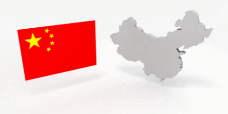

中国の基本情報

簡単に中国のことを頭に入れておきましょう。
●国名 ：中華人民共和国 （中国）
●人口 ：約13億4000万人 （日本の約11倍、世界第1位）
●面積 ：約960万平方キロメートル （日本の約26倍、世界第4位）
●公用語 ：北京語（普通語）
日本と同様、各地に方言が存在。若者のほとんどは北京語を話すことが出来ますが、一部の少数民族や年配の人などは、方言しか話せない人もいます。
●民族 ：56 （現在のおよそ92％は「漢民族」）
●首都 ：北京市 （人口約2000万人）
●直轄市 ：上海市、天津市、重慶市
●首相 ：「習近平」国家主席
●標準時 ：UTC－8 （日本より１時間遅れ）
●通貨： 人民元（CNY） 中国表記「RMB」 （1元は日本円で約16.5円）2014年現在
中国は今日、日本を凌ぐ経済大国として目覚しい発展を続けています。上海や北京、香港などの大都市はほぼ日本と変わらないほどのインフラや商品、建物なども並び、中国へ来た感じがしないと思われる方も多いと思います。
しかし、貧富の差や都市と地方の格差も大きく、農村部へ行けば中国らしい風景、さらに農村部へ進むと貧しい人や職のない人もたくさんいます。
以前は爆発的な人口増加がありましたが、現在は一人っ子政策もあり人口増加は緩やかです。
中国旅行注意に戻す